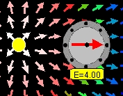

|  |
The EJS Point Charge model shows you the electric field near a point charge at the origin. A movable electric field detector reports the field direction and strength. Detector values can be recorded into a data table and analyzed using a built-in data analysis tool. Users can examine and the model if Ejs is installed.
If you want DataTool to Fit the data, click the Fit checkbox. Click on Auto-fit to let the computer complete the best Line fit. This is probably not a good fit.
The Point Charge Model was created by Wolfgang Christian, Francisco Esquembre and Anne J Cox using the Easy Java Simulations (EJS) authoring and modeling tool. Exercises written by Anne J Cox.
You can examine and modify a compiled EJS model if you run the program by double clicking on the model's jar file. Right-click within the running program and select "Open EJS Model" from the pop-up menu to copy the model's XML description into EJS. You must, of course, have EJS installed on your computer.
Information about EJS is available at: <http://www.um.es/fem/Ejs/> and in the OSP ComPADRE collection <http://www.compadre.org/OSP/>.